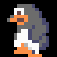
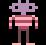
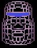
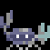
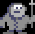

PENGO ISLAND: THE MANUAL |
 |
| PENGO: El mas singular y
divertido pinguino de este lado
del universo. Nacido en los computadores de 8bits, Pengo ha desarrollado
sus abilidades natas, llegando al extremo de poder saltar distancias de
hasta 32 pixels!!!. Ademas pengo ya no se vera obligado a
empujar pesados bloques de hielo. En vez de eso puede recoger nieve del
piso y arrojarla a sus enemigos. Se ve ahora enfrentado a esta aventura para rescatar a Rockford, su viejo amigo (y para impresionar a las pinguinas). | |
|  | ROCKFORD: Simpatica y
extraterrestre hormiga que
vino a este mundo llevado por la ambicion de encontrar unos codiciados
Diamantes. Su repentina desaparicion de los computadores de 8bits entrigo al mundo de los computadores. Pero este misterio se ha visto esclarecido. Rockford ha sido raptado por DOH, el maniatico moai de ARKANOID. Pero Rockford no tiene de que preocuparse, Pengo ya se ha hecho cargo de la situacion... |
|  | DOH: El mas psicopata de
los moais psicopatas. El mas
degenerado de los degenerados. Doh, monstruo final del juego ARKANOID,
quien a sido visto por muy pocos debido a la dificultad del juego. Descontentocon su destino de ser destinado al rincon de las salas de videojuegos, y envidioso por el exito de BOULDERDASH, formulo un maquiavelico plan. Espero que Rockford entrara al tercer BONUS STAGE, y cayo sobre el, encerrandolo en una celda. Pero Doh no sabe que su destino esta marcado, pues si se mete con Rockford, se mete con Pengo... |
| MONOS DE
NIEVE: Seres hidrocongelados que deambulan por las cavernas de hielo con
la unica intencion de detener a Pengo en su aventura. Pero no te preocupes, solo aquellos que se desplazan son una amenaza. Como son pocos, han construido monos de nieve sin vida solo para asustarte. | FOCAS: Que mas se puede decir??? Son focas. |  | CANGREJOS: Desgraciados
crustaceos que luchan por clavar
sus tenazas en Pengo. Son una de las formas de vida mas desconcertante
que encontraras en este lugar. Afortunadamente, estos cangrejos no pueden soportar el miserable impacto de una bien acertada bola de nieve. Suerte. |
 | PINGUINOS ESQUIMALES: Si crees que ya lo habias visto todo, es porque nunca te enfrentaste a estos malvados y desquiciados pinguinos-vampiros-asesinos mutantes del polo este. Enfrentarlos no es cosa facil. |